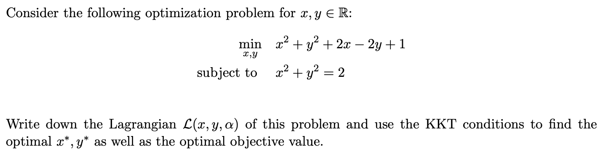

Purpose: Generally, algorithms such as MLE can only optimize unconstrained expressions, such as maxωm1∑l(ω;xi,ji). However, when encountering algorithms with constraints, one needs to employ Duality, LP, QP to solve such problems. Additionally, Duality, LP, QP can also address the first type of problems without constraints.
Duality Problem
Problem Type
ωminJ(ω)s.t. ci(ω)≤0, for i∈jei(ω)=0, for i∈ϵ——(0)
Augmented Lagrange
L(ω,α,β)=J(ω)+i∈j∑αici(ω)+i∈ϵ∑βiei(ω)——(1)
Dual feasible means αi≥0,βi∈R
Theorem 1
From equation (1), it follows that
α≥0,βmaxL(ω,α,β)={J(ω), if ω is feasible∞,otherwise——(2)
Especially, if J∗=minωJ(ω), and ci(ω)≤0 and ei(ω)=0, then
J∗=ωminα≥0,βmaxL(ω,α,β)
Refer to the attached PDF for proof.
Theorem 2 | Weak Duality
Define the Lagrange dual function as follows
D(α,β)=ωminL(ω,α,β)
Then, the following holds
D(α,β)≤J(ω)
for all feasible $ \omega $and α≥0 and β. Particularly,
D∗:=α≥0,βmaxωminL(ω,α,β)≤ωminα≥0,βmaxL(ω,α,β)=J∗
Note: Weak duality doesn’t necessarily require J(ω) to be convex.
Theorem 3 | Strong Duality
If J(ω),ci,ei are all convex, and the following constraint qualification holds:
There exists an ω such that ci(ω)<0, for all i∈j
Then, equation (1) satisfies
D∗:=α≥0,βmaxωminL(ω,α,β)=ωminα≥0,βmaxL(ω,α,β)=J∗
Note that D∗=maxα>0,βD(α,β) represents the case when the duality problem is optimal, and J∗=minωJ(ω) represents the original problem being optimal.
KKT Condition

If the primal problem is convex, then the KKT conditions are both necessary and sufficient. That is, if ω^ and (α^,β^) satisfy the KKT conditions, then ω^ and (α^,β^) are primal and dual optimal, i.e.,

Linear Problem
Problem satisfies
min cTw⇒J(ω)s.t. Aω=b⇒ej(ω)ω≥0⇒ci(ω)
$ D(\alpha, \beta) $for LP is still a LP
Quadratic Problem
Problem satisfies
minωTGω+ωTds.t. Aω=bω≥0
Refer to the attached PDF for specific details on how to apply duality.
Summary
Example Problem
General approach:
-
Write L;
-
D=min(L): Take partial derivatives of w (sometimes there are two), express w in terms of α and β to obtain D;
-
maxD gives D∗,α∗,β∗: Take derivatives of D or use KKT conditions to find D∗,α∗,β∗;
-
J∗, w∗: Substitute into the expression obtained in step 2 to find w∗. J∗=D∗.



Note: The content in this blog is class notes shared for educational purposes only. Some images and content are sourced from textbooks, teacher materials, and the internet. If there is any infringement, please contact aursus.blog@gmail.com for removal.